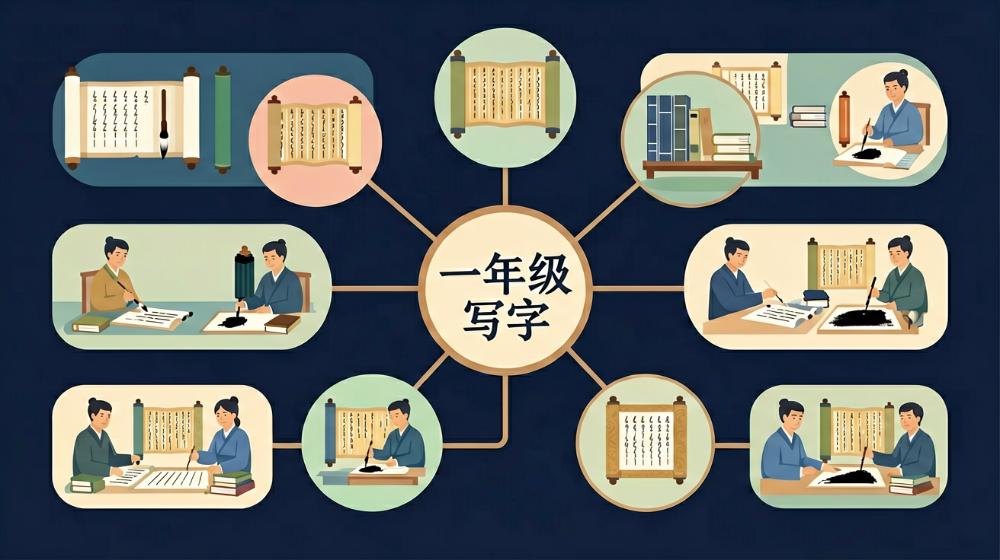

❓ 为什么'水'字要先写中间一竖再写两边？
❓ '水'字的捺为什么不能写成斜线？
❓ 写'水'字时怎么控制笔画之间的距离？
学完这一课，这些问题你都能自信地回答。
And：学生已经会握笔涂鸦
But：不知道汉字由固定笔画组成
Therefore：建立笔画是汉字零件的基本概念
汉字就像搭积木，有8种基本笔画。比如横'一'像小扁担（长度约3厘米），竖'丨'像小木棍（长度约4厘米）。写'十'字时，要先写横再写竖，就像先放扁担再插木棍。所有汉字都由这些笔画按顺序组合而成。
🌍 观察教室门框——横竖组成'口'字；用筷子示范撇捺，像夹菜动作。
'人'字第二笔是什么？
观察'水'字在田字格中的位置
And：知道汉字由笔画组成
But：不明白为什么要按顺序写
Therefore：理解笔顺让写字又快又好看
笔顺就像交通规则，比如'三'字要像排队一样从上到下写三横（每横间隔1厘米）。'木'字先写竖（高5厘米），再写左边的撇和右边的捺，像树干先长再分枝。记住口诀：先横后竖，先撇后捺，从上到下，从左到右。
🌍 数楼梯要一层层数，写字也要按顺序；玩贴纸要先揭后贴，就像先写后连笔。
写'水'字第一笔是什么？
And：能按笔顺写单字
But：字总是歪歪扭扭
Therefore：学会在格子中找到笔画的家
田字格像小房子（边长2厘米），中间十字线是定位器。写'中'字时，竖要穿过中心线（像旗杆），'口'要对称分布在横线两侧。练习时先用手指描红，注意起笔在左上格，收笔在右下格。
🌍 就像把玩具收进收纳盒，笔画也要住进格子；观察窗户的横竖框线找平衡感。
写'日'字时，第二横应该？
分解为4笔：竖钩像小树苗，横撇像滑梯，撇捺像翅膀
竖钩是主笔要挺拔，撇捺舒展保持平衡
和'木'字对比：'水'字有钩无横，捺笔更舒展
观察水滴形状：中间凝聚，向两侧自然流淌
同结构字'永'也适用：先中间后两边原则
先独立作答，再点选项查看对错与错因。
写'十'字时，横画应该放在田字格的什么位置？
哪个字的竖画需要穿过横中线？
写'人'字时，撇捺的起笔位置在：
写'大'字时，横画要写在____线上方
答案：横中
横中线是定位基准线
'口'字的第二笔是____，从右往左写
答案：横折
注意笔顺方向
✅ 收笔时轻顿出尖钩
💡 手腕力度控制不足
✅ 第二笔横撇起笔贴竖钩
💡 对向心结构理解不足
我想练习写「日、月、山、水」这几个象形字。请逐字给我讲解：这个字像什么图形，共几笔，笔顺是什么？
📌 你可以把上面的内容复制给 AI 助手（如 DeepSeek、ChatGPT），开始互动练习！
回忆：今天学了哪些关键词和规则？试着说出来。
用自己的话解释今天学的核心概念，不看书能说清楚吗？
用今天的知识解决一个实际问题，或写一个新例子。
把今天的知识与已有知识联系起来：有什么共同点？有什么区别？能不能自己创造一道新题？